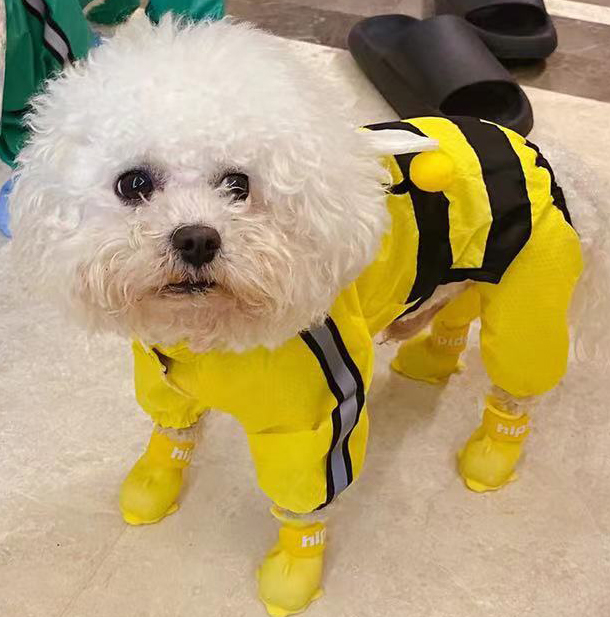

<html>
<head>
<script src="https://cdn.jsdelivr.net/npm/@tensorflow/tfjs@latest"> </script>   
</head> 
<body>
    
    <!--  -->
    <canvas id="canvas" />
<script>

async function run(){
    const MODEL_URL = './model.json';
    const model = await tf.loadLayersModel(MODEL_URL);
    model.summary();

    const img = document.getElementById('img');
    const input = tf.browser.fromPixels(img);

    const IMAGE_SIZE = 150;

    const normalized = tf.mul(tf.cast(input, 'float32'), 1 / 255);
    const resized = tf.image.resizeBilinear(normalized, [IMAGE_SIZE, IMAGE_SIZE])

    tf.browser.toPixels(resized, document.getElementById('canvas'));

   const batched = tf.reshape(resized, [-1, IMAGE_SIZE, IMAGE_SIZE, 3]);

    const result = model.predict(batched);
    console.log(result.toString());
}
run();
</script>
</body>
</html>
